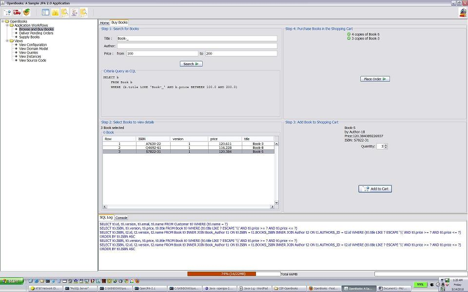
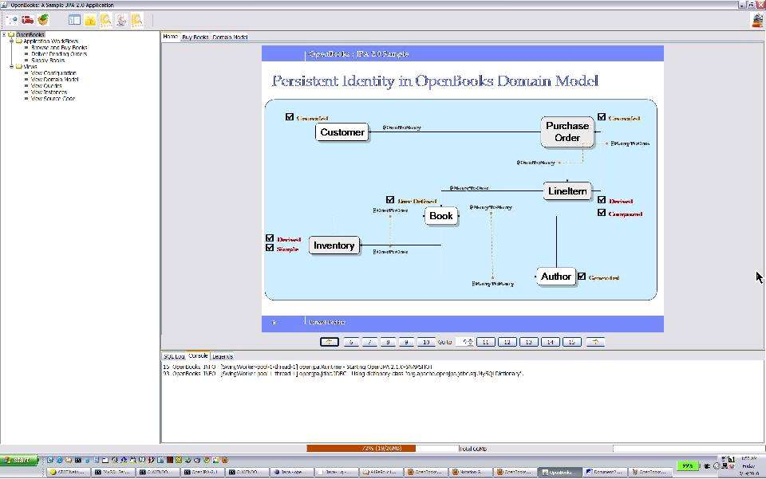
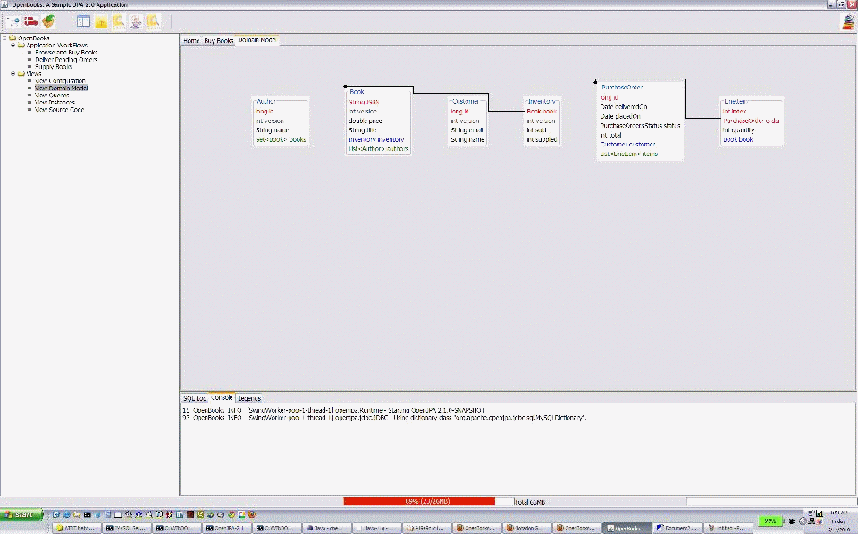

OpenBooks is a sample (and perhaps, simple) application featuring some of the new features in JPA 2.0. This demonstration features usage of new JPA 2.0 features such as
- Criteria Query
- Compound, Derived identity
- Orphan Delete
- Persistent Domain Model API
The sample application shows essential build and packaging steps for both as
- a Swing-based JSE application and
- a typical Web Application Archive (*.war) ready to be deployed in a Java Enterprise container.
OpenBooks demonstrates few useful practices in domain modeling such as composite persistent relations, isolating immutable state for better cache utilization, immutable relationship etc. Architecturally, OpenBooks uses a design pattern to enable the same persistence service be used inside and outside a managed environment. Such patterns vastly speeds up develop-test-debug cycle for persistence and object-relation mapping functionality outside a container.
Availability¶
The source code and build script for OpenBooks is available in OpenJPA SubVersion repository under openjpa-examples/openbooks
To access the source code
$ svn co https://svn.apache.org/repos/asf/openjpa/trunk/openjpa-examples/openbooks
Building¶
- Follow the instruction
to build and run OpenBooks.
These instructions can also be found also in
index.htmlat theOpenBooksroot directory.
Here are few screen shots of OpenBooks running as a Swing Application.
Selecting and Purchasing Books¶

Persistent Domain Model (as a Powerpoint Slide)¶

Browsing the same domain model via Metamodel API¶
